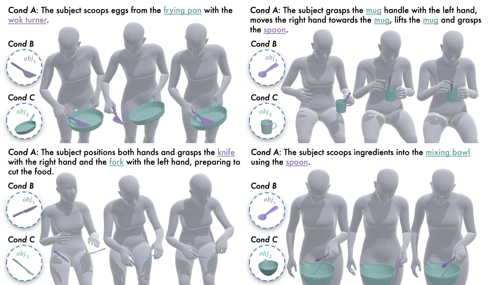
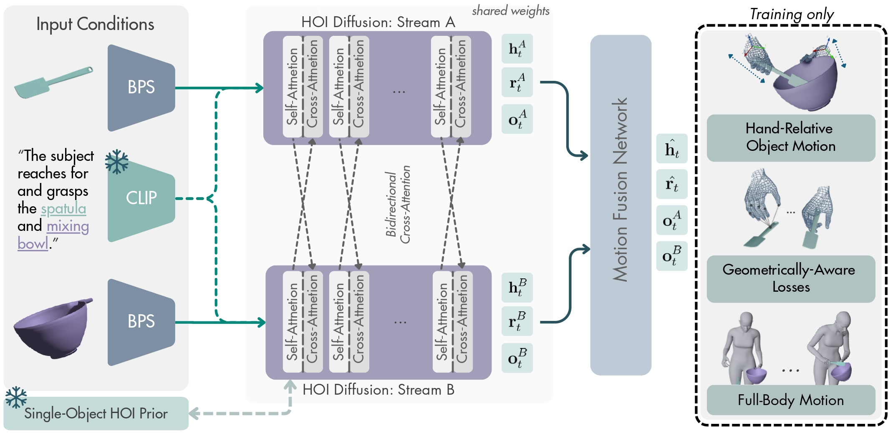

1 Imperial College London 2 University of Alicante

Recent advances in 4D Human-Object Interaction (HOI) generation have enabled increasingly realistic motion synthesis, particularly for single-object manipulation. Yet current research overlooks an inherent property of human behavior: people naturally coordinate both hands and manipulate multiple objects simultaneously. To address this gap, we present Dex2HOI, a unified diffusion model for single- and two-object HOI synthesis from text. At its core, Dex2HOI employs a Dual-Stream Diffusion approach, where each object is processed in a dedicated interaction stream and coordinated through bidirectional cross-attention. To synthesize the final motion, we introduce a Motion Fusion Network integrated with novel hand-relative object representations and contact-aware conditioning applied across the whole sequence. By sampling the diffusion process autoregressively over prefix-conditioned windows, Dex2HOI generates arbitrarily long sequences at real-time speed omitting redundant test-time optimization, achieving up to ×540 inference speed-up over prior state-of-the-art methods. Extensive evaluation on both single- and two-object benchmarks demonstrates state-of-the-art quantitative results, taking a step beyond conventional single-object HOI generation and toward expressive multi-object manipulation.

Key Contributions
One Object Sequences - Each clip shows a generated hand-object interaction from the GRAB test set.
Object: Torus · Action: Inspect
Object: Mug · Action: Drink
Object: Elephant · Action: Pass
Object: Camera · Action: Take Picture
Object: Headphones · Action: Wear
Object: Glasses · Action: Wear
Two Object Sequences - Each clip shows a bimanual two-object interaction from the HUMOTO test set.
Objects: Mixing bowl, spoon
Objects: Vacuum flask, mug
Objects: Frying pan, wok turner
Objects: Spoon, mug
Objects: Plate, spoon
Objects: Knife, fork
@misc{pratikaki2026dex2hoidexterousbimanualtwoobject,
title={Dex2HOI: Dexterous Bimanual Two-Object Interaction Generation},
author={Chrysa Pratikaki and Pablo Ruiz-Ponce and Jiankang Deng and Stefanos Zafeiriou and Rolandos Alexandros Potamias},
year={2026},
eprint={2605.30444},
archivePrefix={arXiv},
primaryClass={cs.CV},
url={https://arxiv.org/abs/2605.30444},
}